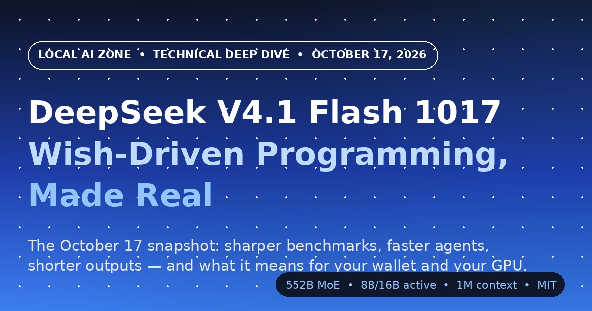

Document Information
A Full Analysis of the October 17, 2026 Snapshot of DeepSeek V4.1 Flash
Abstract
On October 17, 2026, DeepSeek shipped DeepSeek-V4.1-Flash-1017, a point update to the V4.1 Flash model it had released just five weeks earlier. The new snapshot keeps the same Causal Encoder-Decoder architecture — 552 billion backbone parameters with only 8 billion active per input token and 16 billion per output token, a 1-million-token context window, and native image understanding — but adds a fresh round of reinforcement learning that pushes every official benchmark number upward while making the model finish tasks faster and write less. DeepSeek calls the combination a Pareto improvement: better results, lower cost, no trade-off.
This deep dive walks through what actually changed and what it means for different kinds of readers. We compare the official benchmark table row by row against the September build and against K3, GLM-5.3, GPT-5.6 Sol, and Claude Opus 5. We unpack the "wish-driven programming" training recipe and the showcase projects that demonstrate it, from a Forbidden City 3D reconstruction to a Portal 2 recreation built in the Godot engine. We break down the API economics, including the cache hit rates that bring the real-world input price down to roughly $0.017 per million tokens and the new Search and Fetch APIs priced at $0.75 per 1,000 calls. Finally, we look honestly at what it would take to run the MIT-licensed weights on your own hardware, from community GGUF builds already indexed on this site to the realities of serving a 552-billion-parameter mixture-of-experts model at home.
Executive Summary (TL;DR — 90 Seconds)
- What shipped: DeepSeek-V4.1-Flash-1017 is the October 17, 2026 snapshot of V4.1 Flash — same architecture, five more weeks of training. It is live now on the DeepSeek website, app, and API, and the open weights are on Hugging Face and ModelScope under MIT.
- Benchmark gains: Every official benchmark improved over the September build. The biggest jumps are agentic: Terminal-Bench 4.0 rose from 31.2 to 42.3 (+11.1), ProgramBench from 20.3 to 29.1 (+8.8), and Apex Bench from 64.6 to 72.1 (+7.5). DeepSWE v1.1 hits 77.0, which beats every model in the comparison table except Claude Opus 5's 74.0... and every other rival listed.
- Faster and cheaper per task: Outputs are shorter and task completion is quicker than the previous version, which means the cost per completed task drops even though token prices stay the same. With a 91.5% cache hit rate on the official endpoint, the average input token actually costs users about $0.017 per million.
- New Search & Fetch APIs: DeepSeek's in-house search engine is now open to everyone at $0.75 per 1,000 calls per endpoint, and free through October 31, 2026 when called through server-side tools in DeepSeek Harness, Claude Code, and Codex.
- Nothing breaks: The API model name stays
deepseek-flash, so existing applications switch to the better snapshot without any code changes. - Local reality check: The 552B MoE weights are MIT-licensed and downloadable today. Serving the full model at home means hundreds of gigabytes of memory; community GGUF builds (including a 4.13 GB experimental build indexed on this site) and the Hugging Face quantizations page are the practical starting points.
Table of Contents
- 1. What Actually Shipped on October 17
- 2. The 60-Second Architecture Refresher
- 3. Wish-Driven Programming: The Idea Behind the Update
- 4. Benchmark Results: The Full Official Table
- 5. Pricing, Cache Economics, and the Search & Fetch APIs
- 6. Running It Locally: Weights, Quants, and Hardware
- 7. Who Should Care, and Why
- 8. Limitations and Open Questions
- 9. Conclusion
- 10. References
1. What Actually Shipped on October 17
DeepSeek's release cadence in late 2026 looks less like a series of dramatic launches and more like a steady drumbeat of point releases, and V4.1 Flash 1017 is a textbook example of the pattern. The name itself follows the company's snapshot convention: the base model is DeepSeek-V4.1-Flash, and the four-digit suffix records the release date, October 17. If you used DeepSeek V4.1 Flash last month, you were talking to a model trained as of September 10; as of today, the same API routes your requests to a newer checkpoint with five additional weeks of post-training baked in. Nothing about your integration changes, but the answers get better.
The headline of DeepSeek's own announcement is a phrase worth pausing on: the update delivers "stronger benchmark performance, faster task completion, and shorter outputs than the previous version — a Pareto improvement in performance and cost." In economics, a Pareto improvement means at least one thing gets better while nothing gets worse, and that framing is the whole story of this release. Usually model updates ask you to trade something: quality goes up but so does latency, or outputs get more accurate but longer and therefore more expensive. DeepSeek claims the opposite here, and the benchmark tables plus the output-length reduction back the claim up.
The release is also notable for what came with it rather than what is inside it. Alongside the model, DeepSeek opened its Search and Fetch APIs to everyone, powered by an in-house search engine that the company says serves hundreds of millions of requests daily. The update is specifically optimized for agentic harnesses — DeepSeek Harness v0.2.1-rc.1 or later, Tencent's CodeBuddy, and WorkBuddy get named shout-outs — which tells you exactly who DeepSeek thinks this model is for: people who wire models into tools and let them run for many steps. Finally, the weights went straight to open source under the MIT license, with downloads on both Hugging Face and ModelScope from day one, continuing the policy that made the Flash line popular with local-AI users in the first place.
Release Card: DeepSeek-V4.1-Flash-1017
deepseek-flash2. The 60-Second Architecture Refresher
The 1017 snapshot does not change the architecture, but to understand why its agent benchmarks move the way they do, a quick refresher on what makes V4.1 Flash unusual helps. Most large language models you have heard of are decoders: they read your prompt and generate a response token by token, maintaining a memory of everything seen so far called the KV cache. DeepSeek V4.1 Flash instead uses what the company calls a Causal Encoder-Decoder, or CED — a 40-layer Transformer split into a 20-layer causal encoder followed by a 20-layer decoder. Think of it as an assembly line with two stations: the first station reads and digests everything you sent (your instructions, the codebase, the tool results), and the second station writes the response while drawing on that digested summary rather than re-reading the raw text.
This split matters because reading and writing have very different costs in agent workloads. When an agent runs for hundreds of steps, it spends most of its life re-reading long context — files, logs, web pages — and comparatively little time generating tokens. CED exploits that asymmetry: during prefill (the reading phase) only 8 billion of the 552 billion parameters activate per token, while during decode (the writing phase) 16 billion do. Your prompt is processed cheaply, and the expensive, quality-critical generation gets the larger budget. For a general-tech analogy: the model hires a cheap but thorough reading assistant and an expensive but eloquent writer, instead of paying the writer to re-read every document.
The second pillar is KV cache compression, and it is the reason DeepSeek's own citation title for this model family is "Pushing the Limits of KV Cache Compression." The decoder's global cache is projected from the encoder's final hidden states instead of being accumulated layer by layer, and a technique called SWA Bounded Replay reconstructs sliding-window attention states on demand rather than storing them. The upshot, per DeepSeek's numbers, is a persistent cache roughly one-eighth the size of the previous V4 Flash generation — and around a quarter of it according to third-party provider summaries. Since cache memory is what you pay for when an agent re-reads a large codebase hundreds of times, compressing it is what makes long-horizon agent work economically sensible at a budget price tier.
Finally, the model is natively multimodal: text and image embeddings were trained jointly from the start of pre-training rather than bolted on afterward with an adapter. That is why the benchmark table includes vision tests like BabyVision and Chartography alongside coding and terminal benchmarks. The context window stretches to 1,048,576 tokens — about 1,500 pages of A4 text — which matters less for chat and more for the repository-scale, multi-hour agent sessions this release clearly targets.
3. Wish-Driven Programming: The Idea Behind the Update
DeepSeek branded this release "Wish-Driven Programming Made Real," and the phrase describes a training method as much as a marketing angle. The five extra weeks of post-training used reinforcement learning with self-feedback: the model attempts an end-to-end project, grades its own output against the goal, and iterates on the difference. Instead of being rewarded for producing a plausible single-turn answer, it is rewarded for taking a fuzzy human wish — "build me a racing game in the browser" — and doing everything required to make it true: planning, writing the code, running it, observing failures, and fixing them. The wish is the specification; everything in between is the model's problem.
DeepSeek demonstrated the approach with four showcase projects, and the selection is telling. There is a 3D reconstruction of the Forbidden City, a web-based racing game, a recreation of Portal 2 built with the Godot engine, and something called Valley of Ages, a 3D scene that traces evolution from prehistoric times to the modern era. None of these are one-shot code snippets; each requires the model to sustain a goal over many steps, coordinate multiple files or scenes, and survive contact with an actual runtime. That is exactly the skill profile measured by the agentic benchmarks that jumped the most in this release, which suggests the RL recipe and the benchmark gains share a cause rather than being a coincidence.
The other half of the story is behavioral: the model got more concise. DeepSeek reports shorter outputs and faster task completion, and third-party measurement of the Flash line has consistently noted that it is a chatty model by default — the Artificial Analysis evaluation of V4.1 Flash generated roughly 250 million tokens across their intelligence index, nearly double their median. Trimming verbosity is not just cosmetic; in agent harnesses, output tokens are the expensive ones, and every unnecessary sentence in a tool call is money and milliseconds spent for nothing. A model that says the same thing in fewer tokens completes more tasks per dollar, which is the Pareto improvement DeepSeek claims in a nutshell.
One practical note for builders: the update is tuned for specific harnesses, and DeepSeek explicitly recommends DeepSeek Harness v0.2.1-rc.1 or later for the best experience, alongside Tencent CodeBuddy and WorkBuddy. If you run the model through your own agent loop, you may see smaller gains than the headline numbers until your scaffolding uses the tool-calling patterns the post-training optimized for. This is normal for 2026-era releases — the model and the harness it ships with are increasingly one product — but it is worth knowing before you expect a +11-point Terminal-Bench jump in your own stack.
4. Benchmark Results: The Full Official Table
All numbers below come from the official Hugging Face model card published on release day. Evaluations use the Claude Code harness for Terminal-Bench 4.0 and the mini-swe-v2 harness for DeepSWE v1.1; the dagger (†) marks the text-only subset of HLE. The columns matter: DS-V4.1-Flash-1017 is the new snapshot, DS-V4.1-Flash is the September build it replaces, and the remaining columns are the competitive set DeepSeek itself chose — K3, GLM-5.3, GPT-5.6 Sol, and Claude Opus 5.
| Benchmark | V4.1-Flash-1017 | V4.1-Flash | K3 | GLM-5.3 | GPT-5.6 Sol | Opus 5 |
|---|---|---|---|---|---|---|
| HLE w/o tools | 42.6 (44.0†) | 36.8 (39.1†) | 43.5 | 42.0† | 44.5 | 56.3 |
| Terminal-Bench 4.0 | 42.3 | 31.2 | 12.6 | 37.9 | 39.9 | 51.8 |
| DeepSWE v1.1 | 77.0 | 74.2 | 67.5 | 66.9 | 73.0 | 74.0 |
| ProgramBench | 29.1 | 20.3 | 17.5 | 19.0 | 23.0 | 37.0 |
| NL2Repo-Bench | 68.2 | 65.4 | 58.0 | 58.0 | 56.8 | 75.3 |
| Automation-Bench v1.0.6 | 60.5 | 54.8 | 46.7 | 48.8 | 45.8 | 50.3 |
| Agents' Last Exam | 35.4 | 31.8 | 27.6 | 28.5 | 26.7 | 28.6 |
| Apex Bench v1.1 | 72.1 | 64.6 | 47.8 | 56.6 | 54.3 | 65.8 |
| Chartography (w/tools) | 83.0 | 78.9 | 68.1 | — | 79.9 | 84.0 |
| BabyVision (w/tools) | 92.5 | 89.6 | 85.7 | — | 88.9 | 94.1 |
| ZeroBench-main (w/tools) | 51.0 | 49.0 | 41.0 | — | 53.0 | 52.0 |
4.1 What the deltas actually say
Reading the first two columns side by side tells you where the five extra weeks went. The agentic and coding rows moved the most: Terminal-Bench 4.0 gained 11.1 points, ProgramBench 8.8, Apex Bench 7.5, Automation-Bench 5.7, and Agents' Last Exam 3.6. The knowledge-heavy HLE improved by 5.8 points on the full setting, and even the vision rows — BabyVision and Chartography — inched up by around three to four points. In other words, the RL-with-self-feedback recipe concentrated its gains exactly where the wish-driven framing predicts: sustained, multi-step task completion rather than trivia recall.
The competitive picture is more nuanced than the bolded column suggests. Against GLM-5.3 and K3, the 1017 snapshot now leads on every row where comparisons exist, often by wide margins — Terminal-Bench by 4.4 over GLM-5.3 and nearly 30 points over K3, DeepSWE by 10 points over both. Against GPT-5.6 Sol it wins seven of the eight comparable rows, with HLE the exception. Claude Opus 5 remains ahead on the hardest reasoning rows — HLE by 13.7 points, Terminal-Bench by 9.5, ProgramBench by 7.9 — but the new snapshot actually edges Opus 5 on DeepSWE v1.1 (77.0 versus 74.0), Automation-Bench (60.5 versus 50.3), Apex Bench (72.1 versus 65.8), and Agents' Last Exam (35.4 versus 28.6). A model whose output tokens cost a fifth of Opus-class pricing beating it on four agentic rows is the real news of this table.
The honest summary
If your benchmark is "answer the hardest science question with no tools," Opus 5 is still in a different class. If your benchmark is "complete the most real agent tasks per dollar," the 1017 snapshot is now arguably the strongest value in the comparison — and DeepSWE 77.0 means it beats every listed rival on that software-engineering suite outright.
5. Pricing, Cache Economics, and the Search & Fetch APIs
The 1017 snapshot ships with no price change, which is itself the point of a Pareto update: you get the higher benchmark numbers at the same rates. On the official DeepSeek endpoint the model is served under the name deepseek-flash, and legacy identifiers such as deepseek-v4-flash are still accepted for compatibility. Off-peak rates are $0.15 per million input tokens, $0.003 per million cache-read tokens, and $0.60 per million output tokens; peak hours (01:00–04:00 and 06:00–10:00 UTC, Monday to Friday) double those to $0.30 and $1.20. The 50% off-peak discount has been in force since September 10, so night-owl batch jobs and scheduled evaluation runs pay half price.
The number that matters more than any sticker price is the effective cost after caching, and here the model's cheap-input design shows its teeth. OpenRouter's weighted averages for the flash endpoint put the input price actually paid at roughly $0.017 per million tokens, because the official DeepSeek endpoint reports a 91.5% cache hit rate. In plain terms: agents re-read the same context over and over, cache hits cost 2% of the input price, and theFlash line's compressed cache makes those hits cheap to serve — so real workloads spend nearly all their budget on output tokens. DeepSeek's own routing data shows it carrying about 96% of the token traffic for this model across providers, with DeepInfra and inference.net splitting the remainder.
| Provider | Input /M | Output /M | Cache read /M | Latency (P50) | Throughput | Uptime |
|---|---|---|---|---|---|---|
| DeepSeek (official) | $0.15 | $0.60 | $0.003 | 1.38 s | 156 tps | 100% |
| inference.net | $0.10 | $0.50 | $0.002 | 0.81 s | 56 tps | 100% |
| DeepInfra (30% off) | $0.14 | $0.42 | $0.0042 | 1.55 s | 39 tps | 93.3% |
| DeepInfra (list) | $0.20 | $0.60 | $0.006 | 1.55 s | 39 tps | 93.3% |
Provider prices fluctuate with promotions, so treat the table as a snapshot of release-day conditions rather than a permanent truth; the structural facts are that official DeepSeek throughput (156 tps) is roughly triple most third-party hosts, while DeepInfra's discounted output price is currently the lowest listed. What does not fluctuate this week is the Search & Fetch launch bundled into this release. DeepSeek's in-house search backend — already serving hundreds of millions of requests daily inside its own products — is now exposed as two public APIs at $0.75 per 1,000 calls per endpoint. Better still, calls made through server-side tools in DeepSeek Harness, Claude Code, and Codex are free until October 31, 2026 at 16:00 UTC, which effectively gives every agent builder a two-week free trial of grounded search. For cost-per-task math, this matters: an agent that can fetch live documentation for a fraction of a cent makes fewer wrong turns, and fewer wrong turns is where the real savings live.
6. Running It Locally: Weights, Quants, and Hardware
The 1017 weights are on Hugging Face (deepseek-ai/DeepSeek-V4.1-Flash-1017) and ModelScope under the MIT license, so the download is the easy part — the question is what "running it locally" realistically means for a 552-billion-parameter mixture-of-experts model. Even though only 8–16 billion parameters activate per token, all 552 billion must be resident in memory, because you cannot predict which experts a given token will route to. At full precision that is over a terabyte; the practical ceiling for most quantization levels lands in the hundreds of gigabytes. Our estimate table below uses standard GGUF sizing for a 552B backbone as a planning guide — treat it as an order-of-magnitude budget, not gospel.
| Format (est.) | Disk / RAM needed | Realistic hardware |
|---|---|---|
| BF16 (unquantized) | ~1,100 GB+ | Multi-node server, 8× H200-class or larger |
| Q8 GGUF | ~590 GB | Dual-socket CPU rig with 768 GB RAM, or 8× 128 GB GPUs |
| Q4_K_M GGUF | ~320 GB | 512 GB RAM workstation or a 4× 128 GB GPU box |
| Q2_K GGUF | ~210 GB | 256 GB RAM server; quality noticeably degraded |
| Community experimental builds | varies | See GGUF Discovery index — details below |
For the community-build row, our own GGUF Discovery index already tracks what hobbyists shipped for the September base model: antirez's deepseek-v4.1-flash-gguf repository, uploaded September 11, lists a Q2 build and a Vision build at 4.13 GB each, requires about 16 GB of RAM per the index metadata, and has accumulated 1.7 million downloads and 67 likes. A 4 GB file obviously cannot contain 552 billion parameters, so treat that repository as an experimental artifact from a well-known tinkerer rather than the full model — it is precisely the kind of thing worth watching as the 1017 quant ecosystem settles. Expect properly sharded GGUFs of the 1017 snapshot to appear on the Hugging Face quantizations page within days to weeks; llama.cpp, Ollama, and LM Studio all surface those community quants through their standard model browsers, and the base architecture was already supported by the time the September model landed.
Two integration details deserve a warning label. First, this release does not ship a Jinja chat template; DeepSeek instead publishes a self-contained Python reference encoder (encoding.py) with test cases for multi-turn chat, tool calling, thinking mode, numeric reasoning effort, mid-conversation system messages, and interleaved images, plus a maintained Rust toolkit called deepseek-recipe with Python bindings that converts Chat Completions and Responses API requests into the correct token stream. If you are writing your own inference glue, use those rather than hand-rolling a template — getting the prompt format subtly wrong is the fastest way to reproduce a benchmark miss. Second, the recommended sampling parameters are unusual by mainstream standards: temperature 1.0, top_p 1.0, and a max output budget of at least 256K tokens for agent runs. Temperature 1.0 sounds hot if you are used to 0.7-era defaults, but it is what the post-training calibrated for, and the benchmark numbers above were produced under exactly those settings.
The pragmatic recommendation
Unless you own hardware with several hundred gigabytes of pooled memory, the API is the intended way to use this model — and thanks to the CED cache economics, a heavy day of agent work on the official endpoint typically costs less than a coffee. Run the weights locally if you are researching serving stacks, need air-gapped privacy, or enjoy the hobby; run the API if you need the model's actual intelligence at full quality today.
7. Who Should Care, and Why
If you build on APIs: the 1017 snapshot is a free upgrade that requires zero migration. Your deepseek-flash calls now hit a model that scores 5.8 to 11 points higher on the agentic benchmarks while writing shorter outputs, which directly lowers your per-task cost. If your agents do research, switching them on before October 31 lets you add grounded Search and Fetch calls for free during the launch window, and at $0.75 per 1,000 calls afterward — cheap enough to leave enabled by default.
If you run agent harnesses: this release was tuned for you specifically. DeepSeek Harness v0.2.1-rc.1+, Tencent CodeBuddy, and WorkBuddy are the named optimization targets, and the biggest benchmark gains (Terminal-Bench +11.1, ProgramBench +8.8) live exactly in the terminal-and-code-execution territory those harnesses operate in. The shorter outputs are also a hidden throughput win: at 156 tokens per second on the official endpoint, a 30% reduction in output length is a 30% reduction in wall-clock wait, not just in bill.
If you are a local-AI hobbyist: the news is bittersweet but still interesting. The MIT license means the exact weights behind the API — including today's improvements — are on Hugging Face right now, which is not true of most frontier-tier models in 2026. Serving them at home remains a multi-hundred-gigabyte project, but the community quantization ecosystem around the September base model appeared within a day of release, and there is no technical reason the 1017 build should be slower to quantize. If you are tracking the frontier of what open weights can do, this snapshot is currently the strongest open-weights agentic performer on several major suites, and that alone makes the download ledger worth watching on this site.
8. Limitations and Open Questions
The first caveat is scope: this is a point release, and the gains, while real, are measured against the model's own September baseline using DeepSeek's chosen harnesses. Benchmark suites like Terminal-Bench and DeepSWE are sensitive to harness configuration — DeepSeek discloses that it used Claude Code for the former and mini-swe-v2 for the latter — so your own results through a different scaffold may differ from the published deltas. Independent verification of the strongest claims (notably DeepSWE 77.0) was still catching up at publication time, and one third-party analysis has already cautioned readers to separate the well-documented model upgrade from less-confirmed framing around the Search API branding. We lean on the official model card for every number in this post for exactly that reason.
The second caveat is competitive context. Claude Opus 5 still leads on the hardest single-shot reasoning rows, and DeepSeek's own comparison table is honest about that; meanwhile rival labs are not standing still, with Meta shipping an 816B open-weight model and Mistral previewing a trillion-parameter flagship in the same season. Third, the pricing details in section 5 are release-day snapshots: provider promotions (like DeepInfra's 30% discount) and weighted-average cache economics shift week to week, and the off-peak discount schedule is a DeepSeek billing policy, not a law of nature. Finally, the local-running estimates in section 6 are planning guides for a 552B backbone, not measurements of shipped GGUF files; wait for the community quantization ledger to fill in before budgeting disks. None of these caveats undercut the release — they just mark the difference between a launch-day post and a settled consensus, which will take a few weeks to form.
9. Conclusion
DeepSeek-V4.1-Flash-1017 is a small release with a sharp point: five weeks of reinforcement learning with self-feedback made a budget agentic model meaningfully better at the exact things agents do — running terminals, writing programs, completing multi-step tasks — while making it faster and more concise at the same price. The benchmark table shows a clean sweep against GLM-5.3 and K3, a consistent win against GPT-5.6 Sol outside of tool-less HLE, and outright wins over Claude Opus 5 on four agentic rows including a 77.0 on DeepSWE v1.1. The Pareto framing holds up: nobody loses anything they had before, and everyone gains benchmarks, speed, or both.
The strategic read is just as important as the numbers. DeepSeek is iterating under a stable brand name, serving improvements through an unchanged API identifier, and publishing the weights under MIT the same day — a combination that quietly compounds. For builders, the practical moves this week are simple: keep calling deepseek-flash and enjoy the free upgrade, try the Search and Fetch APIs while they are free until October 31, update your harness if you run one, and watch the GGUF index if you self-host. Sometimes the most consequential releases are the ones that arrive without a launch event, and this is one of them.
10. References & Citations
- DeepSeek, "DeepSeek-V4.1-Flash-1017: Wish-Driven Programming Made Real," official changelog, api-docs.deepseek.com/news/news261017, October 17, 2026.
- DeepSeek-AI, "DeepSeek-V4.1-Flash-1017," Hugging Face model card (benchmarks, prompt encoding, sampling parameters, license), huggingface.co/deepseek-ai/DeepSeek-V4.1-Flash-1017, October 17, 2026.
- DeepSeek-AI, "DeepSeek-V4.1-Flash: Pushing the Limits of KV Cache Compression," Hugging Face model card (CED architecture, SWA Bounded Replay), September 2026.
- OpenRouter, "DeepSeek: DeepSeek V4.1 Flash 1017 — API Pricing & Providers" (provider pricing, cache hit rates, latency and uptime data), openrouter.ai/deepseek/deepseek-v4.1-flash-1017, accessed October 17, 2026.
- Artificial Analysis, "DeepSeek V4.1 Flash (Max) — Intelligence, Performance & Price Analysis" (intelligence index, verbosity, throughput context), artificialanalysis.ai, accessed October 17, 2026.
- Shattered.io, "DeepSeek V4.1-Flash-1017 Hits 77.0 on DeepSWE [2026]" (off-peak discount history, Search API verification notes), October 2026.
- GGUF Discovery, "Deepseek V4.1 Flash" index entries (antirez/deepseek-v4.1-flash-gguf: 4.13 GB Q2 and Vision builds, download counts), local-ai-zone.github.io, accessed October 17, 2026.